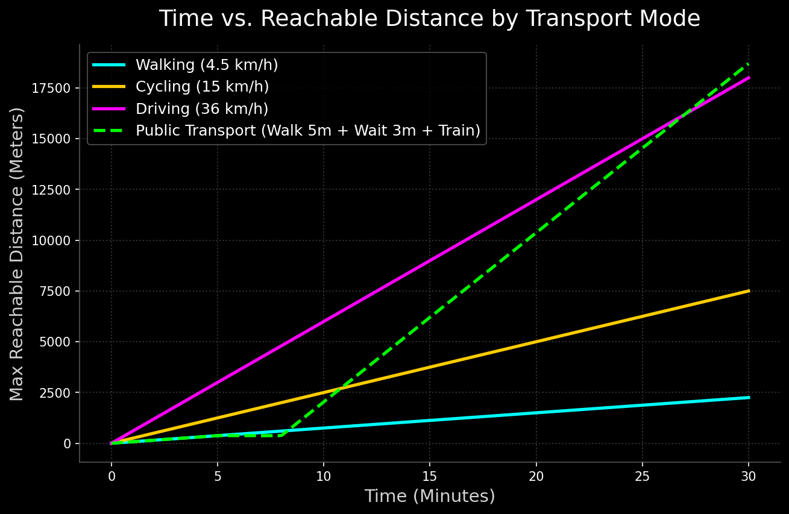

To accurately position the programmatic zones of The Highline Oasis, we conducted an extensive Python-based isochrone simulation (via OSMnx and NetworkX) of the surrounding infrastructural grid. The analysis visualizes spatial accessibility across different modes of transportation over a 30-minute threshold.
Speed: 4.5 km/h (75 m/min)
Defines the immediate local catchment. The Highline Skywalk directly expands this footprint across the highway barrier.
Speed: 15.0 km/h (250 m/min)
Forms the secondary regional connection. The site's open public spaces act as critical junctions for urban cycling routes.
Speed: 36.0 km/h (600 m/min)
Provides macroscopic regional access via the cloverleaf interchange, anchoring the logistics of the Mega Markets.
Speed: Walk + 3m Wait + Train (50 km/h)
The multimodal game-changer. Characterized by delayed initial reach but exponential long-distance connectivity.

This mathematical model translates the slope of each line as the inverse of speed (Slope = 1/Speed). The flat horizontal segment of the Public Transit (Green) line perfectly visualizes the physical reality of waiting at a station platform.
The following visualizations use Dijkstra's algorithm to map the actual street network penetrability from the site's center point.
Walking (0-30 min)
Biking (0-30 min)
• Avg Speed: 15 km/h
• Critical regional connector bridging local neighborhoods.
Driving (0-30 min)
Smappen Data Fusion